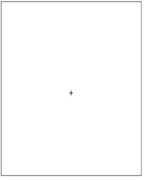
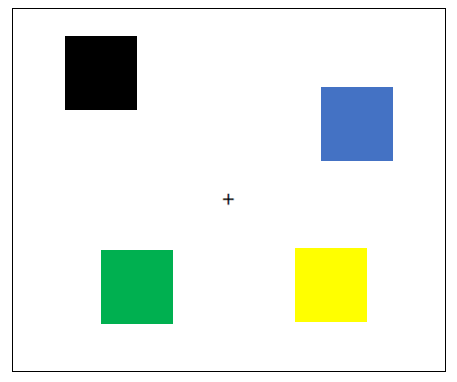
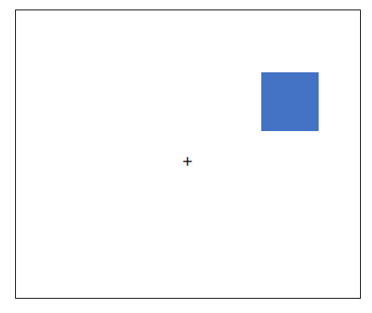
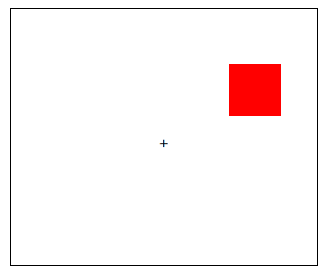
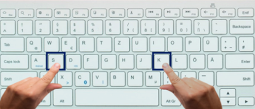

<!DOCTYPE html>
<html>

<head>
    <title>Squares</title>
    <script src="js/jquery-2.1.1.min.js"></script>
    <script src="js/jspsych.js"></script>
    <script src="plugins/jspsych-resize.js"></script>
    <script src="plugins/jspsych-html-keyboard-response.js"></script>
    <script src="plugins/jspsych-instructions.js"></script>
    <script src="plugins/jspsych-survey-text.js"></script>
    <script src="plugins/jspsych-survey-multi-choice.js"></script>
    <script src="plugins/jspsych-fullscreen.js"></script>
    <script src="plugins/jspsych-html-button-response.js"></script>
    <script src="plugins/jspsych-html-slider-response.js"></script>
    <link href="css/my_exp.css" rel="stylesheet" type="text/css">
    <link href="css/jspsych.css" rel="stylesheet" type="text/css">
    <!-- debugging via sentry.com -->
    <script src="https://browser.sentry-cdn.com/6.7.2/bundle.tracing.min.js"
        integrity="sha384-wOrLFfswE3wmvwEzqgo2kc7ksrFcx4ephHugBnWW3jY8ktO8xSi5Lny58pZSpovY"
        crossorigin="anonymous"></script>
    <script>
        Sentry.init({
            dsn: "https://e930abb231a542d7b9b087bbdd7736ab@o879085.ingest.sentry.io/5831471",
            integrations: [new Sentry.Integrations.BrowserTracing()],
            // We recommend adjusting this value in production, or using tracesSampler
            // for finer control
            tracesSampleRate: 1.0,
        });
    </script>
</head>

<body>

    <script>
        /*full screen */
        var enter_fullscreen = {
            type: "fullscreen",
            fullscreen_mode: true
        }
        /*this defines the css properties according to the window_screen_size*/

        var root = document.documentElement;
        var vis_angle_px = 105
        var square_width = 51.4
        root.style.setProperty('--top_middle', window.screen.height / 2 + "px");
        root.style.setProperty('--left_middle', window.screen.width / 2 - (square_width / 2) + "px");
        root.style.setProperty('--top_a', window.screen.height / 2 - vis_angle_px + "px");
        root.style.setProperty('--left_a', window.screen.width / 2 - vis_angle_px + "px");
        root.style.setProperty('--top_b', window.screen.height / 2 - 2 * vis_angle_px + "px");
        root.style.setProperty('--left_b', window.screen.width / 2 - 2 * vis_angle_px + "px");
        root.style.setProperty('--top_c', window.screen.height / 2 - 3 * vis_angle_px + "px");
        root.style.setProperty('--left_c', window.screen.width / 2 - 3 * vis_angle_px + "px");
        root.style.setProperty('--top_d', window.screen.height / 2 - vis_angle_px + "px");
        root.style.setProperty('--right_d', window.screen.width / 2 - vis_angle_px + "px");
        root.style.setProperty('--top_e', window.screen.height / 2 - 2 * vis_angle_px + "px");
        root.style.setProperty('--right_e', window.screen.width / 2 - 2 * vis_angle_px + "px");
        root.style.setProperty('--top_f', window.screen.height / 2 - 3 * vis_angle_px + "px");
        root.style.setProperty('--right_f', window.screen.width / 2 - 3 * vis_angle_px + "px");
        root.style.setProperty('--bottom_g', window.screen.height / 2 - vis_angle_px + "px");
        root.style.setProperty('--right_g', window.screen.width / 2 - vis_angle_px + "px");
        root.style.setProperty('--bottom_h', window.screen.height / 2 - 2 * vis_angle_px + "px");
        root.style.setProperty('--right_h', window.screen.width / 2 - 2 * vis_angle_px + "px");
        root.style.setProperty('--bottom_i', window.screen.height / 2 - 3 * vis_angle_px + "px");
        root.style.setProperty('--right_i', window.screen.width / 2 - 3 * vis_angle_px + "px");
        root.style.setProperty('--bottom_j', window.screen.height / 2 - vis_angle_px + "px");
        root.style.setProperty('--left_j', window.screen.width / 2 - vis_angle_px + "px");
        root.style.setProperty('--bottom_k', window.screen.height / 2 - 2 * vis_angle_px + "px");
        root.style.setProperty('--left_k', window.screen.width / 2 - 2 * vis_angle_px + "px");
        root.style.setProperty('--bottom_l', window.screen.height / 2 - 3 * vis_angle_px + "px");
        root.style.setProperty('--left_l', window.screen.width / 2 - 3 * vis_angle_px + "px");

        root.style.setProperty('--upper1', window.screen.height / 2 - 3 * vis_angle_px + "px");
        root.style.setProperty('--upper2', window.screen.height / 2 - 2 * vis_angle_px + "px");
        root.style.setProperty('--upper3', window.screen.height / 2 - vis_angle_px + "px");

        root.style.setProperty('--lower1', window.screen.height / 2 - 3 * vis_angle_px + "px");
        root.style.setProperty('--lower2', window.screen.height / 2 - 2 * vis_angle_px + "px");
        root.style.setProperty('--lower3', window.screen.height / 2 - vis_angle_px + "px");

        //---------------------------------------------------------------------------------------------
        root.style.setProperty('--left_card', window.screen.width / 2 - 2 * vis_angle_px + "px");
        root.style.setProperty('--right_card', window.screen.width / 2 - 2 * vis_angle_px + "px");
        root.style.setProperty('--top_card', window.screen.height / 2 - 90 + "px");
        root.style.setProperty('--top_reward', window.screen.height / 2 + "px");
        root.style.setProperty('--left_reward', window.screen.width / 2 + "px");

        /*---------------------------------------------------- 
        Variabels for squares game
        ------------------------------------------------------*/
        /*randomly assigning the mapping of the response-keys to be ks or sk */
        mapping = jsPsych.randomization.sampleWithoutReplacement(['sk', 'ks'], 1)[0];
        /* getting the images to display */
        var change_detection_images = ['images/squares/black.png', 'images/squares/blue.png', 'images/squares/brown.png', 'images/squares/cyan.png', 'images/squares/green.png', 'images/squares/magenta.png', 'images/squares/orange.png', 'images/squares/red.png', 'images/squares/yellow.png']
        /* setting the locations to randomize from */
        var locations = [" 4) {
                    random_locations.push(random_2_locations[1])
                }
            }
            return random_locations
        }
        /*This function combines the squares and the locations that were randomly chosen */
        function generate_random_squares(condition) {
            number_of_images = parseInt(condition[0])
            change_detection_images = jsPsych.randomization.shuffle(change_detection_images)
            current_locations = get_locations(locations, number_of_images, locations_setsize1)
            squares = '';
            for (index = 0; index < number_of_images; index++) {
                squares += current_locations[index] + change_detection_images[index] + ">"
            }
            return squares + fixation;
        }
        var condition_squares_exp = jsPsych.randomization.sampleWithoutReplacement(['4same', '4diff', '8same', '8diff'], 1)[0]
        var fixation = '<div class="fixation">+</div>'
        /*This function downloads the data */
        function download_csv(csv) {
            var hiddenElement = document.createElement('a');
            file_name = "WM_visual_array_" + subN + "_" + IDsub.toString() + ".csv"
            hiddenElement.href = 'data:text/csv;charset=utf-8,' + encodeURI(csv);
            hiddenElement.target = '_blank';
            hiddenElement.download = file_name;
            hiddenElement.click();
        }
        /*---------------------------------------------------- 
        Timeline for squares starts
        ------------------------------------------------------*/
        var timeline = [];
        timeline.push(enter_fullscreen)
        /*---------------------------------------------------- 
        Start instructions variabels
        ------------------------------------------------------*/
        var instructions_squares = {
            type: "instructions",
            pages: ["The experiment will have two parts, we will now learn the first one, called the <b>'squares game'</b>.",
                "We will now provide instructions regarding the squares game. <b>Please read them carefully.</b>",
                "Feel free to <b>go back and forth between the screens using the arrows</b> (Left=previous, Right=next) or the buttons below."
                , "At the end of the instructions, <b>we will ask you to complete a short quiz about them</b>, to make sure everything is well understood."
                , "In this part of the experiment, you will see a plus in the middle of the screen." +
                "<p> We would like you to <b>focus on the plus whenever it appears</b>.</p> " + "",
                "<p> Then, 4 or 8 colored 'memory' squares will appear on the screen. <b>You need to remember the colors and locations of all of the squares</b>.</p>" +
                "",
                "<p> Right afterward, the 'memory' squares will disappear and instead, one 'test' square will show up in a place where one of the squares was previously displayed.</p>" +
                "<p> Your goal is to <b>identify whether the new 'test' square is in the same or different color as the one previously displayed in this location</b>.</p>" +
                "<p> You need to press <b>'" + mapping[0] + "'</b> if you think the color is the <b>same</b> as the color of the square previously appearing in this location.</p>" +
                "",
                "<p> You need to press <b>'" + mapping[1] + "'</b> if you think the color is <b>different</b> than the color of the square previously appearing in this location.</p>" +
                "", "<p> We will now ask you to complete a short quiz to make sure that you understood the instructions."],
            show_clickable_nav: true,
        };

        var Q1_square_options = ["2 or 4", "4 or 6", "4 or 8"];
        var Q2_square_options = ["True", "False"];
        var Q3_square_options = ["Click on it", "Press the LEFT or RIGHT arrow keys", "Press the ‘" + mapping[0] + "’ or ‘" + mapping[1] + "’ key."];
        var Q4_square_options = ["The plus appearing in the middle of the screen", "The colors and locations of the 'memory' squares", "The color and location of the single 'test' square"];
        var Q5_square_options = ["To tell if the 'test' square is in the same color as the square previously appearing in this location", "To tell if a square previously appeared in the location of the shown square"];


        var instructions_test_squares = {
            type: 'survey-multi-choice',
            questions: [
                { prompt: "How many squares will be initially shown?", name: 'set_size', correct: '4 or 8', options: Q1_square_options, required: true },
                { prompt: "The single square will appear after the squares will disappear ", name: 'steps', correct: 'True', options: Q2_square_options, required: true },
                { prompt: "How do you choose if a square is same or different?", name: 'choose_square', correct: "Press the ‘" + mapping[0] + "’ or ‘" + mapping[1] + "’ key.", options: Q3_square_options, required: true },
                { prompt: "What should you try to remember?", name: 'remember', correct: "The colors and locations of the 'memory' squares", options: Q4_square_options, required: true },
                { prompt: "What is your task?", name: 'task', correct: "To tell if the 'test' square is in the same color as the square previously appearing in this location", options: Q5_square_options, required: true },
            ],
            data: { trial_name: 'test_squares' }
        };

        var if_trial_squares = {
            type: 'html-button-response',
            stimulus: "<p>Sorry. You made a mistake.<br>"
                + "Let’s go back to the instructions. "
                + "Please read them carefully before submitting your answers. <br>"
                + "Thank you!",
            choices: ['Back to instructions']
        }
        var to_repeat_squares;
        var check_answers = {
            timeline: [if_trial_squares],
            conditional_function: function () {
                // get the data from the previous trial,
                // and check which key was pressed
                to_repeat_squares = false;
                var responses_to_test_square = JSON.parse(jsPsych.data.get().filter({ trial_type: 'survey-multi-choice' }).last(1).select('responses').values[0])
                for (i = 0; i < instructions_test_squares.questions.length; i++) {
                    current_name = instructions_test_squares.questions[i].name;
                    current_correct = instructions_test_squares.questions[i].correct
                    if (current_correct != responses_to_test_square[current_name]) {
                        to_repeat_squares = true;
                        return to_repeat_squares
                    }
                    else {
                        to_repeat_squares = false;
                    }
                }
                return to_repeat_squares
            }
        }

        var instructions_squares_loop = {
            timeline: [instructions_squares, instructions_test_squares, check_answers],
            loop_function: function () {
                if (to_repeat_squares == true) {
                    return true;
                } else {
                    return false;
                }
            }
        }
        /*---------------------------------------------------- 
        Start practice part
        ------------------------------------------------------*/
        var current_squares_practice_trial = 0;
        var current_locations = null; // set up a global variable 
        var condition_squares_practice = jsPsych.randomization.sampleWithoutReplacement(['1same', '1diff'], 1)[0] //this makes sure that the subject will have at least one set_size1 trial in practice
        var start_practice_squares = {
            type: 'html-keyboard-response',
            stimulus: "<p> We will now start some practice trials.<br> <b>The practice trials will also include some trials in which you will need to remember only one square to make sure you understood the instructions.</b> <br> You may already want to be ready with your fingers on '<b>s'</b> and <b>'k'</b>. <br> <br> <u>Please try to be as accurate as possible for the experiment to succeed.</u> <br><br><b>Press any key to begin</b></u>",
            post_trial_gap: 1000,
            on_finish: function () { document.querySelector('head').insertAdjacentHTML('beforeend', '<style id="cursor-toggle"> html { cursor: none; } </style>') },
        }

        var fixation_memory = {
            type: 'html-keyboard-response',
            stimulus: fixation,
            choices: jsPsych.NO_KEYS,
            trial_duration: 1000,
        }

        var memory_practice = {
            type: "html-keyboard-response",
            stimulus: function () { return generate_random_squares(condition_squares_practice) },
            choices: jsPsych.NO_KEYS,
            trial_duration: 200,
            data: {
                phase: 'practice', trial_name: 'memory', trial_num: function () { return current_squares_practice_trial },
                set_size: function () {
                    return condition_squares_practice[0]
                }
            }
        }

        var fixation_retention = {
            type: 'html-keyboard-response',
            stimulus: fixation,
            choices: jsPsych.NO_KEYS,
            trial_duration: 900
        }

        var test_practice = {
            type: "html-keyboard-response",
            stimulus: function () {
                rand_num = getRandomInt(number_of_images - 1)
                if (condition_squares_practice[1] == 's') { /* it is the same condition */
                    square = current_locations[rand_num] + change_detection_images[rand_num] + ">"
                }
                else { /* it is different condition */
                    square = current_locations[rand_num] + jsPsych.randomization.sampleWithoutReplacement(change_detection_images.slice(number_of_images), 1) + ">"
                }
                return square + fixation
            },
            choices: ['s', 'k'],
            trial_duration: 6000,
            data: {
                phase: 'practice', trial_name: 'test', trial_num: function () { return current_squares_practice_trial },
                correct_response: function () {
                    if (condition_squares_practice[1] == 's') { //it is same condition
                        key_press_num = jsPsych.pluginAPI.convertKeyCharacterToKeyCode(mapping[0])

                    }
                    else {
                        key_press_num = jsPsych.pluginAPI.convertKeyCharacterToKeyCode(mapping[1])
                    }
                    return key_press_num
                },
                set_size: function () {
                    return condition_squares_practice[0]
                }
            },
            on_finish: function (data) {
                condition_squares_practice = jsPsych.randomization.sampleWithoutReplacement(['1same', '1diff', '4same', '4diff', '8same', '8diff'], 1)[0] //now everything could be
                var correct = false;
                if (data.correct_response == data.key_press) {
                    correct = true;
                }
                else if (data.key_press == null) {
                    correct = null;
                }
                data.is_correct = correct;
                current_squares_practice_trial += 1;
            }
        }

        var feedback_squares = {
            type: 'html-keyboard-response',
            stimulus: function () {
                feedback_text = 'incorrect'
                last_trial_correct = jsPsych.data.getLastTrialData().values()[0].is_correct;
                if (last_trial_correct == true) {
                    feedback_text = 'correct'
                }
                else if (last_trial_correct == null) {
                    feedback_text = 'Please respond faster'
                }
                return feedback_text
            },
            choices: jsPsych.NO_KEYS,
            trial_duration: 500
        }

        var demo_procedure_squares = {
            timeline: [fixation_memory, memory_practice, fixation_retention, test_practice, feedback_squares],
            repetitions: 15 //3.5sec per trial*15 =52.5sec
        }

        var if_trial_practice_squares = {
            on_start: function () {
                if (document.querySelector('#cursor-toggle') != null) {
                    document.querySelector('#cursor-toggle').remove()
                }
            },
            type: 'html-button-response',
            stimulus: "<p>Sorry. You made too many mistakes.<br>"
                + "Let’s do the practice session once again. <br>"
                + "Thank you!",
            choices: ['Back to practice']
        }
        var to_repeat_practice_squares;
        var check_accuracy = {
            timeline: [if_trial_practice_squares],
            conditional_function: function () {
                /* Get the data from the previous trial,and calculate accuracy
                   If the participant wasn't perfect in the trials with set_size 1 - we will repeat.*/
                to_repeat_practice_squares = false;
                var correct_prac_square = jsPsych.data.getLastTimelineData().filter({ phase: 'practice', trial_name: 'test', set_size: '1' }).select('is_correct').sum()
                var total_prac_square = jsPsych.data.getLastTimelineData().filter({ phase: 'practice', trial_name: 'test', set_size: '1' }).select('is_correct').count()
                var prac_square_accuracy = correct_prac_square / total_prac_square;
                if (prac_square_accuracy != 1) {
                    to_repeat_practice_squares = true;
                    return to_repeat_practice_squares
                }
                else {
                    to_repeat_practice_squares = false;
                }
                return to_repeat_practice_squares
            }
        }

        var practice_squares_loop = {
            timeline: [start_practice_squares, demo_procedure_squares, check_accuracy],
            loop_function: function () {
                if (to_repeat_practice_squares == true) {
                    return true;
                } else {
                    return false;
                }
            }
        }
        /*Start exp part of squares game*/
        var start_exp_squares = {
            type: 'html-keyboard-response',
            stimulus: '<p>Good Job! <br> You have finished the practice trials.<br> We will now start the real experiment. Please try to be as accurate as possible. <br> <br> <b> Press any key to begin</p>'
        };

        var current_squares_exp_trial = 0;

        var memory = {
            type: "html-keyboard-response",
            stimulus: function () { return generate_random_squares(condition_squares_exp) },
            choices: jsPsych.NO_KEYS,
            trial_duration: 200,
            data: {
                phase: 'exp', trial_name: 'memory', trial_num: function () { return current_squares_exp_trial }
            }
        }

        var test = {
            type: "html-keyboard-response",
            stimulus: function () {
                rand_num = getRandomInt(number_of_images - 1)
                if (condition_squares_exp[1] == 's') { /* it is the same condition */
                    square = current_locations[rand_num] + change_detection_images[rand_num] + ">"
                }
                else { /* it is different condition */
                    square = current_locations[rand_num] + jsPsych.randomization.sampleWithoutReplacement(change_detection_images.slice(number_of_images), 1) + ">"
                }
                return square + fixation
            },
            choices: ['s', 'k'],
            trial_duration: 6000,
            data: {
                phase: 'exp', trial_name: 'test_squares', mapping: mapping, trial_num: function () { return current_squares_exp_trial },
                correct_response: function () {
                    if (condition_squares_exp[1] == 's') { //it is same condition
                        key_press_num = jsPsych.pluginAPI.convertKeyCharacterToKeyCode(mapping[0])
                    }
                    else {
                        key_press_num = jsPsych.pluginAPI.convertKeyCharacterToKeyCode(mapping[1])
                    }
                    return key_press_num
                },
                set_size: function () {
                    return condition_squares_exp[0]
                },
                condition: function () {
                    return condition_squares_exp[1]
                }
            },

            on_finish: function (data) {
                condition_squares_exp = jsPsych.randomization.sampleWithoutReplacement(['4same', '4diff', '8same', '8diff'], 1)[0]
                var correct = false;
                if (data.correct_response == data.key_press) {
                    correct = true;
                }
                else if (data.key_press == null) {
                    correct = null;
                }
                data.is_correct = correct;
                current_squares_exp_trial += 1;
            }
        }
        /*Finish exp part of squares game*/
        var finish_exp_squares = {
            type: 'html-keyboard-response',
            stimulus: '<p>Good Job! <br> You have finished the squares game.<br> We will now move on to the next test. Good luck! <br> <br> <b> Press any key to continue</p>'
        };

        var test_procedure_squares = {
            timeline: [fixation_memory, memory, fixation_retention, test, feedback_squares],
            repetitions: 120 //3.5sec per trial per 120 trials= 420sec
        }

        var full_procedure_squares = {
            timeline: [instructions_squares_loop, practice_squares_loop, start_exp_squares, test_procedure_squares, finish_exp_squares]
        } //instructions takes 60sec total
        timeline.push(full_procedure_squares)

        /*---------------------------------------------------- 
              Define init for the whole experiment
              ------------------------------------------------------*/
        jsPsych.init({
            timeline: timeline,
            preload_images: change_detection_images,
            show_preload_progress_bar: true,
            on_finish: function () {
                /*calculate accuracy */
                var correct_test_squares = jsPsych.data.get().filter({ phase: 'exp', trial_name: 'test_squares' }).select('is_correct').sum()
                var total_test_squares = jsPsych.data.get().filter({ phase: 'exp', trial_name: 'test_squares' }).select('is_correct').count()
                var test_squares_accuracy = correct_test_squares / total_test_squares;
                localStorage.squares_accuracy = test_squares_accuracy;
                /*get data */
                download_csv(jsPsych.data.get().csv())
            }
        });

    </script>

</body>

</html>